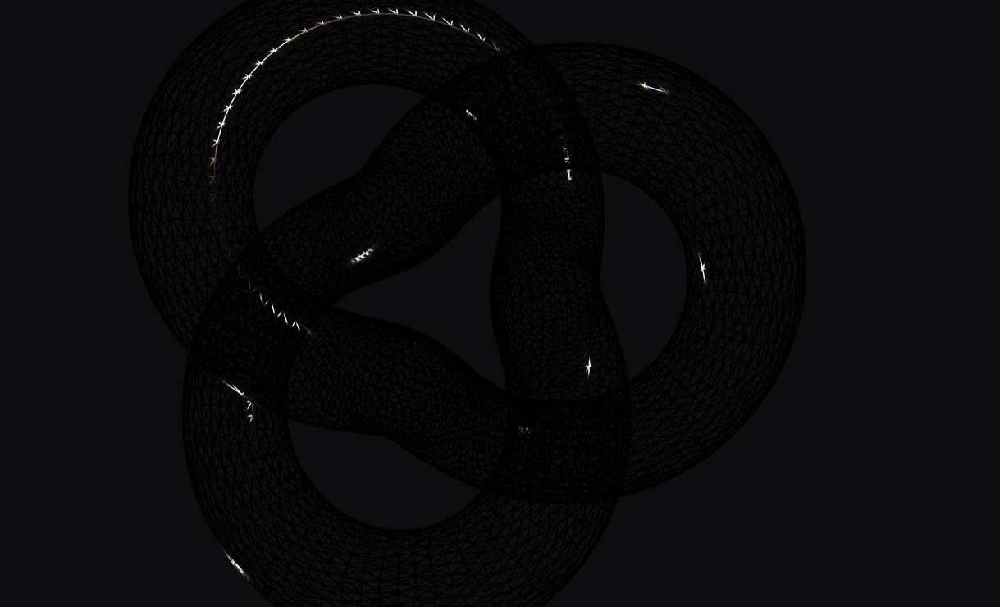
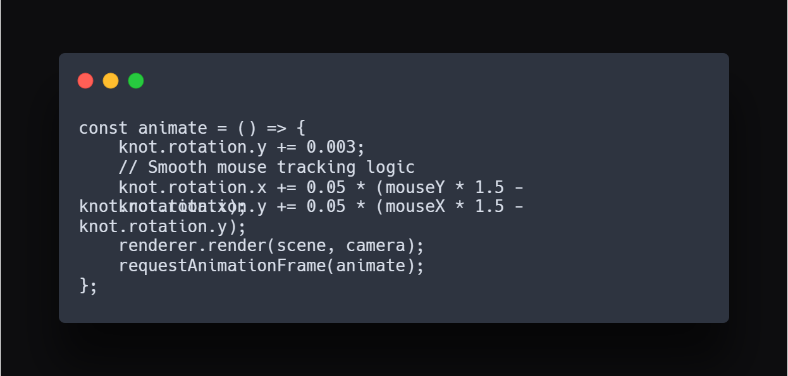

Project 03 / Experimental Lab
Subject
3D Web / GLSL
Role
Creative Coder
Framework
Three.js / GSAP
Status
Active R&D
Live WebGL Render — Interactive Buffer
Traditional web design is flat. Spatial UI is an exploration into the Z-axis, bringing industrial product design principles into the browser. The goal was to create a tactile sense of depth using real-time lighting and shadow.
This project utilizes **WebGL** via Three.js to render complex geometries. By mapping mouse movement to camera rotation, I created a "Spatial" feeling that encourages the user to explore the object. All assets are optimized for high-performance interaction.


End of Archive